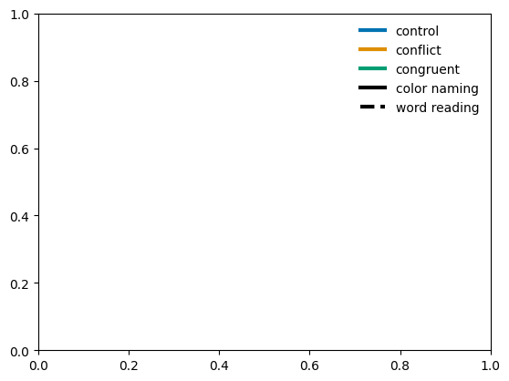
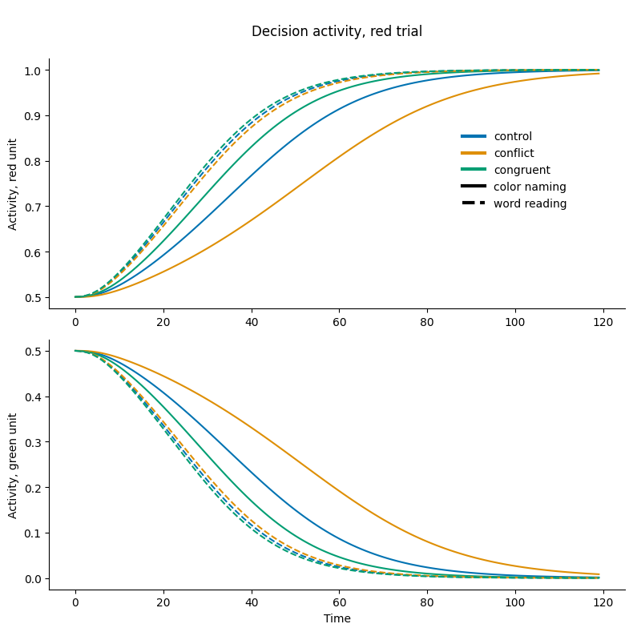
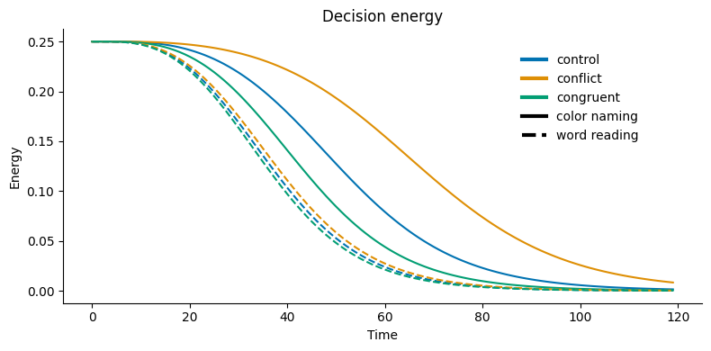

8.1 Conflict Monitoring#
Humans are motivationally omnivorous – from wanting to catch a fish to wanting to walk on the moon. Accomplishing open-ended goals that can span days to lifetimes requires … did you just get an email notification? Go ahead, check your phone, this notebook is very patient… now you’re back … requires a cognitive architecture capable of overcoming interruptions, sustaining effort, and controlling attention. These abilities comprise the will of free will.
Around the start of the semester, you freely decided to learn about computational modeling of psychological function, and for the most part have willfully followed through. At times it has been effortless – when you were captivated by fascinating discoveries, theories, and models. At other times it has been effortful – requiring you to suppress a wide variety of distractions and competing interests. During those effortful moments, when you succeeded in maintaining or regaining focus on the lectures, readings, or lab work, what was happening in your mind? In this lab, we will explore the cognitive processes that monitor for internal conflict and help overcome that conflict. When effort is required to help control attention, mechanisms that monitor conflict can activate effort and control. For a familiar starting point, we will build a conflict monitoring system on top of a Stroop model introduced in the last chapter (see 7).
Setup and Installation:
%%capture
%pip install psyneulink
%pip install stroop
import time
import numpy as np
import psyneulink as pnl
from stroop.stimulus import get_stimulus_set, TASKS, COLORS, CONDITIONS
import matplotlib.pyplot as plt
from matplotlib.lines import Line2D
np.random.seed(0)
# constants
experiment_info = f"""
stroop experiment info
- all colors:\t {COLORS}
- all words:\t {COLORS}
- all tasks:\t {TASKS}
- all conditions:{CONDITIONS}
"""
print(experiment_info)
# calculate experiment metadata
n_conditions = len(CONDITIONS)
n_tasks = len(TASKS)
n_colors = len(COLORS)
# OTHER CONSTANTS
N_UNITS = 2
stroop experiment info
- all colors: ['red', 'green']
- all words: ['red', 'green']
- all tasks: ['color naming', 'word reading']
- all conditions:['control', 'conflict', 'congruent']
Setup#
The Stroop Model#
Here we define a function that creates a model of the Stroop task. This is the same model as we created in the previous tutorial (see, 7.2)
def get_stroop_model(
unit_noise_std=.01,
dec_noise_std=.1,
integration_rate=.2,
leak=0,
competition=1
):
# model params
hidden_func = pnl.Logistic(gain=1.0, x_0=4.0)
# input layer, color and word
inp_clr = pnl.TransferMechanism(
default_variable=[0, 0], function=pnl.Linear, name='COLOR INPUT'
)
inp_wrd = pnl.TransferMechanism(
default_variable=[0, 0], function=pnl.Linear, name='WORD INPUT'
)
# task layer, represent the task instruction; color naming / word reading
inp_task = pnl.TransferMechanism(
default_variable=[0, 0], function=pnl.Linear, name='TASK'
)
# hidden layer for color and word
hid_clr = pnl.TransferMechanism(
default_variable=[0, 0],
function=hidden_func,
integrator_mode=True,
integration_rate=integration_rate,
noise=pnl.NormalDist(standard_deviation=unit_noise_std).function,
name='COLORS HIDDEN'
)
hid_wrd = pnl.TransferMechanism(
default_variable=[0, 0],
function=hidden_func,
integrator_mode=True,
integration_rate=integration_rate,
noise=pnl.NormalDist(standard_deviation=unit_noise_std).function,
name='WORDS HIDDEN'
)
# output layer
output = pnl.TransferMechanism(
default_variable=[0, 0],
function=pnl.Logistic,
integrator_mode=True,
integration_rate=integration_rate,
noise=pnl.NormalDist(standard_deviation=unit_noise_std).function,
name='OUTPUT'
)
# decision layer, some accumulator
decision = pnl.LCAMechanism(
default_variable=[0, 0],
leak=leak, competition=competition,
noise=pnl.UniformToNormalDist(
standard_deviation=dec_noise_std).function,
name='DECISION'
)
# PROJECTIONS, weights copied from cohen et al (1990)
wts_clr_ih = pnl.MappingProjection(
matrix=[[2.2, -2.2], [-2.2, 2.2]], name='COLOR INPUT TO HIDDEN')
wts_wrd_ih = pnl.MappingProjection(
matrix=[[2.6, -2.6], [-2.6, 2.6]], name='WORD INPUT TO HIDDEN')
wts_clr_ho = pnl.MappingProjection(
matrix=[[1.3, -1.3], [-1.3, 1.3]], name='COLOR HIDDEN TO OUTPUT')
wts_wrd_ho = pnl.MappingProjection(
matrix=[[2.5, -2.5], [-2.5, 2.5]], name='WORD HIDDEN TO OUTPUT')
wts_tc = pnl.MappingProjection(
matrix=[[4.0, 4.0], [0, 0]], name='COLOR NAMING')
wts_tw = pnl.MappingProjection(
matrix=[[0, 0], [4.0, 4.0]], name='WORD READING')
# build the model
model = pnl.Composition(name='STROOP model')
model.add_linear_processing_pathway([inp_clr, wts_clr_ih, hid_clr])
model.add_linear_processing_pathway([inp_wrd, wts_wrd_ih, hid_wrd])
model.add_linear_processing_pathway([hid_clr, wts_clr_ho, output])
model.add_linear_processing_pathway([hid_wrd, wts_wrd_ho, output])
model.add_linear_processing_pathway([inp_task, wts_tc, hid_clr])
model.add_linear_processing_pathway([inp_task, wts_tw, hid_wrd])
model.add_linear_processing_pathway([output, pnl.IDENTITY_MATRIX, decision])
# collect the node handles
nodes = [inp_clr, inp_wrd, inp_task, hid_clr, hid_wrd, output, decision]
metadata = [integration_rate, dec_noise_std, unit_noise_std]
return model, nodes, metadata
Let’s create a model with no noise and plot the model graph.
# turn off noise
unit_noise_std = 0
dec_noise_std = 0
# define the model
model, nodes, model_params = get_stroop_model(unit_noise_std, dec_noise_std)
# fetch the params
[integration_rate, dec_noise_std, unit_noise_std] = model_params
[inp_color, inp_word, inp_task, hid_color, hid_word, output, decision] = nodes
Show the graph:
model.show_graph(output_fmt = 'jupyter')
---------------------------------------------------------------------------
FileNotFoundError Traceback (most recent call last)
File /opt/hostedtoolcache/Python/3.11.15/x64/lib/python3.11/site-packages/graphviz/backend/execute.py:76, in run_check(cmd, input_lines, encoding, quiet, **kwargs)
75 kwargs['stdout'] = kwargs['stderr'] = subprocess.PIPE
---> 76 proc = _run_input_lines(cmd, input_lines, kwargs=kwargs)
77 else:
File /opt/hostedtoolcache/Python/3.11.15/x64/lib/python3.11/site-packages/graphviz/backend/execute.py:96, in _run_input_lines(cmd, input_lines, kwargs)
95 def _run_input_lines(cmd, input_lines, *, kwargs):
---> 96 popen = subprocess.Popen(cmd, stdin=subprocess.PIPE, **kwargs)
98 stdin_write = popen.stdin.write
File /opt/hostedtoolcache/Python/3.11.15/x64/lib/python3.11/subprocess.py:1026, in Popen.__init__(self, args, bufsize, executable, stdin, stdout, stderr, preexec_fn, close_fds, shell, cwd, env, universal_newlines, startupinfo, creationflags, restore_signals, start_new_session, pass_fds, user, group, extra_groups, encoding, errors, text, umask, pipesize, process_group)
1023 self.stderr = io.TextIOWrapper(self.stderr,
1024 encoding=encoding, errors=errors)
-> 1026 self._execute_child(args, executable, preexec_fn, close_fds,
1027 pass_fds, cwd, env,
1028 startupinfo, creationflags, shell,
1029 p2cread, p2cwrite,
1030 c2pread, c2pwrite,
1031 errread, errwrite,
1032 restore_signals,
1033 gid, gids, uid, umask,
1034 start_new_session, process_group)
1035 except:
1036 # Cleanup if the child failed starting.
File /opt/hostedtoolcache/Python/3.11.15/x64/lib/python3.11/subprocess.py:1955, in Popen._execute_child(self, args, executable, preexec_fn, close_fds, pass_fds, cwd, env, startupinfo, creationflags, shell, p2cread, p2cwrite, c2pread, c2pwrite, errread, errwrite, restore_signals, gid, gids, uid, umask, start_new_session, process_group)
1954 if err_filename is not None:
-> 1955 raise child_exception_type(errno_num, err_msg, err_filename)
1956 else:
FileNotFoundError: [Errno 2] No such file or directory: PosixPath('dot')
The above exception was the direct cause of the following exception:
ExecutableNotFound Traceback (most recent call last)
File /opt/hostedtoolcache/Python/3.11.15/x64/lib/python3.11/site-packages/IPython/core/formatters.py:1036, in MimeBundleFormatter.__call__(self, obj, include, exclude)
1033 method = get_real_method(obj, self.print_method)
1035 if method is not None:
-> 1036 return method(include=include, exclude=exclude)
1037 return None
1038 else:
File /opt/hostedtoolcache/Python/3.11.15/x64/lib/python3.11/site-packages/graphviz/jupyter_integration.py:98, in JupyterIntegration._repr_mimebundle_(self, include, exclude, **_)
96 include = set(include) if include is not None else {self._jupyter_mimetype}
97 include -= set(exclude or [])
---> 98 return {mimetype: getattr(self, method_name)()
99 for mimetype, method_name in MIME_TYPES.items()
100 if mimetype in include}
File /opt/hostedtoolcache/Python/3.11.15/x64/lib/python3.11/site-packages/graphviz/jupyter_integration.py:98, in <dictcomp>(.0)
96 include = set(include) if include is not None else {self._jupyter_mimetype}
97 include -= set(exclude or [])
---> 98 return {mimetype: getattr(self, method_name)()
99 for mimetype, method_name in MIME_TYPES.items()
100 if mimetype in include}
File /opt/hostedtoolcache/Python/3.11.15/x64/lib/python3.11/site-packages/graphviz/jupyter_integration.py:112, in JupyterIntegration._repr_image_svg_xml(self)
110 def _repr_image_svg_xml(self) -> str:
111 """Return the rendered graph as SVG string."""
--> 112 return self.pipe(format='svg', encoding=SVG_ENCODING)
File /opt/hostedtoolcache/Python/3.11.15/x64/lib/python3.11/site-packages/graphviz/piping.py:104, in Pipe.pipe(self, format, renderer, formatter, neato_no_op, quiet, engine, encoding)
55 def pipe(self,
56 format: typing.Optional[str] = None,
57 renderer: typing.Optional[str] = None,
(...) 61 engine: typing.Optional[str] = None,
62 encoding: typing.Optional[str] = None) -> typing.Union[bytes, str]:
63 """Return the source piped through the Graphviz layout command.
64
65 Args:
(...) 102 '<?xml version='
103 """
--> 104 return self._pipe_legacy(format,
105 renderer=renderer,
106 formatter=formatter,
107 neato_no_op=neato_no_op,
108 quiet=quiet,
109 engine=engine,
110 encoding=encoding)
File /opt/hostedtoolcache/Python/3.11.15/x64/lib/python3.11/site-packages/graphviz/_tools.py:185, in deprecate_positional_args.<locals>.decorator.<locals>.wrapper(*args, **kwargs)
177 wanted = ', '.join(f'{name}={value!r}'
178 for name, value in deprecated.items())
179 warnings.warn(f'The signature of {func_name} will be reduced'
180 f' to {supported_number} positional arg{s_}{qualification}'
181 f' {list(supported)}: pass {wanted} as keyword arg{s_}',
182 stacklevel=stacklevel,
183 category=category)
--> 185 return func(*args, **kwargs)
File /opt/hostedtoolcache/Python/3.11.15/x64/lib/python3.11/site-packages/graphviz/piping.py:121, in Pipe._pipe_legacy(self, format, renderer, formatter, neato_no_op, quiet, engine, encoding)
112 @_tools.deprecate_positional_args(supported_number=1, ignore_arg='self')
113 def _pipe_legacy(self,
114 format: typing.Optional[str] = None,
(...) 119 engine: typing.Optional[str] = None,
120 encoding: typing.Optional[str] = None) -> typing.Union[bytes, str]:
--> 121 return self._pipe_future(format,
122 renderer=renderer,
123 formatter=formatter,
124 neato_no_op=neato_no_op,
125 quiet=quiet,
126 engine=engine,
127 encoding=encoding)
File /opt/hostedtoolcache/Python/3.11.15/x64/lib/python3.11/site-packages/graphviz/piping.py:149, in Pipe._pipe_future(self, format, renderer, formatter, neato_no_op, quiet, engine, encoding)
146 if encoding is not None:
147 if codecs.lookup(encoding) is codecs.lookup(self.encoding):
148 # common case: both stdin and stdout need the same encoding
--> 149 return self._pipe_lines_string(*args, encoding=encoding, **kwargs)
150 try:
151 raw = self._pipe_lines(*args, input_encoding=self.encoding, **kwargs)
File /opt/hostedtoolcache/Python/3.11.15/x64/lib/python3.11/site-packages/graphviz/backend/piping.py:212, in pipe_lines_string(engine, format, input_lines, encoding, renderer, formatter, neato_no_op, quiet)
206 cmd = dot_command.command(engine, format,
207 renderer=renderer,
208 formatter=formatter,
209 neato_no_op=neato_no_op)
210 kwargs = {'input_lines': input_lines, 'encoding': encoding}
--> 212 proc = execute.run_check(cmd, capture_output=True, quiet=quiet, **kwargs)
213 return proc.stdout
File /opt/hostedtoolcache/Python/3.11.15/x64/lib/python3.11/site-packages/graphviz/backend/execute.py:81, in run_check(cmd, input_lines, encoding, quiet, **kwargs)
79 except OSError as e:
80 if e.errno == errno.ENOENT:
---> 81 raise ExecutableNotFound(cmd) from e
82 raise
84 if not quiet and proc.stderr:
ExecutableNotFound: failed to execute PosixPath('dot'), make sure the Graphviz executables are on your systems' PATH
<graphviz.graphs.Digraph at 0x7f2fc5674250>
The Task Stimuli#
Again, we have two tasks:
color naming
word reading
… and three conditions:
control
conflict
congruent
# the length of the stimulus sequence
n_time_steps = 120
input_set = get_stimulus_set(inp_color, inp_word, inp_task, n_time_steps)
# show what's in the dictionary
for task in TASKS:
print(f'{task}: {input_set[task].keys()}')
color naming: dict_keys(['control', 'conflict', 'congruent'])
word reading: dict_keys(['control', 'conflict', 'congruent'])
# show one stimuli sequence
task = 'color naming'
cond = 'conflict'
print(input_set[task][cond][inp_color].T)
[[1 1 1 1 1 1 1 1 1 1 1 1 1 1 1 1 1 1 1 1 1 1 1 1 1 1 1 1 1 1 1 1 1 1 1 1
1 1 1 1 1 1 1 1 1 1 1 1 1 1 1 1 1 1 1 1 1 1 1 1 1 1 1 1 1 1 1 1 1 1 1 1
1 1 1 1 1 1 1 1 1 1 1 1 1 1 1 1 1 1 1 1 1 1 1 1 1 1 1 1 1 1 1 1 1 1 1 1
1 1 1 1 1 1 1 1 1 1 1 1]
[0 0 0 0 0 0 0 0 0 0 0 0 0 0 0 0 0 0 0 0 0 0 0 0 0 0 0 0 0 0 0 0 0 0 0 0
0 0 0 0 0 0 0 0 0 0 0 0 0 0 0 0 0 0 0 0 0 0 0 0 0 0 0 0 0 0 0 0 0 0 0 0
0 0 0 0 0 0 0 0 0 0 0 0 0 0 0 0 0 0 0 0 0 0 0 0 0 0 0 0 0 0 0 0 0 0 0 0
0 0 0 0 0 0 0 0 0 0 0 0]]
Run he model on all Task - Condition Combinations#
test the model on all CONDITIONS x TASKS combinations
# log the activities
hid_color.set_log_conditions('value')
hid_word.set_log_conditions('value')
output.set_log_conditions('value')
# run the model
execution_id = 0
for task in TASKS:
for cond in CONDITIONS:
print(f'Running {task} - {cond} ... ')
model.run(
context=execution_id,
inputs=input_set[task][cond],
num_trials=n_time_steps,
)
execution_id += 1
Running color naming - control ...
Running color naming - conflict ...
Running color naming - congruent ...
Running word reading - control ...
Running word reading - conflict ...
Running word reading - congruent ...
Here, we define a function that collects the logged activity for all trials …
def get_log_values(execution_ids_):
"""
get logged activity, given a list/array of execution ids
"""
# word hidden layer
hw_acts = np.array([
np.squeeze(hid_word.log.nparray_dictionary()[ei]['value'])
for ei in execution_ids_
])
# color hidden layer
hc_acts = np.array([
np.squeeze(hid_color.log.nparray_dictionary()[ei]['value'])
for ei in execution_ids_
])
out_acts = np.array([
np.squeeze(hid_color.log.nparray_dictionary()[ei]['value'])
for ei in execution_ids_
])
dec_acts = np.array([
np.squeeze(model.parameters.results.get(ei))
for ei in execution_ids_
])
return hw_acts, hc_acts, out_acts, dec_acts
… and collect the activity for all tasks x conditions
# collect the activity
ids = [ei for ei in range(execution_id)]
hw_acts, hc_acts, out_acts, dec_acts = get_log_values(ids)
print('activities: trial_id x n_time_steps x n_units')
print(f'word hidden: \t{np.shape(hw_acts)}')
print(f'color hidden: \t{np.shape(hc_acts)}')
print(f'output: \t{np.shape(out_acts)}')
print(f'decision acts: \t{np.shape(dec_acts)}')
activities: trial_id x n_time_steps x n_units
word hidden: (6, 120, 2)
color hidden: (6, 120, 2)
output: (6, 120, 2)
decision acts: (6, 120, 2)
Visualize Decision Activity#
In this section, we will visualize the activity of the two decision units. For simplicity, the stimuli were intentionally chosen so that the correct response is always red (e.g. in a word naming - conflict trial, the word is red). Therefore, the activity for the red decision unit is always higher than the green decision unit. However, the difference between these two units depends on both task and condition.
Before looking at the results, predict which task-condition combination will evoke the biggest differences between the two decision units? Explain your reasoning. Write your answer below.
✅ Solution
You can think about this as “easy” vs “hard” decisions. As further appart the activations are (the higher the difference), the easier the decision is. If — on the contrary — activity levels are more similar (the difference is low), the decision is harder.
For the word naming task, the activity is high for the red unit, since the word is red. The color unit is not very important here, since both the task demand unit “surpresses” the color unit and the weights from the color unit are lower anyways. So the word naming task doesn’t lead to conflict (the difference of activity will be high no matter what condition)
For the color naming task, the activity difference, the activity difference depends more on the condition:
congruent > control > conflict
Here, for more visually appealing plots,we are using seaborn for a colorpalette, so let’s install this here:
%%capture
%pip install seaborn
import seaborn as sns
We define a legend:
# define the set of colors
col_pal = sns.color_palette('colorblind', n_colors=3)
# define the set of line style
lsty_plt = ['-', '--']
# line width
lw_plt = 3
lgd_elements = []
# legend for all conditions
for i, cond in enumerate(CONDITIONS):
lgd_elements.append(
Line2D([0], [0], color=col_pal[i], lw=lw_plt, label=cond))
# legend for all tasks
for i, task in enumerate(TASKS):
lgd_elements.append(
Line2D([0], [0], color='black', lw=lw_plt, label=task,
linestyle=lsty_plt[i])
)
# show the legend
plt.legend(handles=lgd_elements, frameon=False)
<matplotlib.legend.Legend at 0x7f2fc2fbf190>

Plotting Response Unit Activity by Condition#
The cell below creates a plot of decision unit activity over time for 3 different trial types. For all trials, the ink color is red and the task is to respond to the ink color. Control trials have no word. Congruent trials display the word Red. And Incongruent trials display the word Green. In this figure, the top 3 lines show the Red Response Unit Activity, and these are higher because the stimulus is red ink and the task is to respond to the color of the ink. The bottom 3 lines show the Green Response Unit Activity.
For the incongruent color naming trial, the Red Response Unit is more active because the ink is red and the task is to respond to the ink color. However, the Green Response Unit (light blue line) is also somewhat active because the word is Green. The relatively small (smaller than any other task-condition) difference between these two units suggests that the Decision Energy should be higher for this trial.
"""plot the activity
"""
f, axes = plt.subplots(2, 1, figsize=(8, 8))
for j, task in enumerate(TASKS):
for i, cond in enumerate(CONDITIONS):
axes[0].plot(
dec_acts[i + j*n_conditions][:, 0],
color=col_pal[i], label=CONDITIONS[i], linestyle=lsty_plt[j],
)
axes[1].plot(
dec_acts[i + j*n_conditions][:, 1],
color=col_pal[i], linestyle=lsty_plt[j],
)
title_text = """
Decision activity, red trial
"""
axes[0].set_title(title_text)
for i, ax in enumerate(axes):
ax.set_ylabel(f'Activity, {COLORS[i]} unit')
axes[-1].set_xlabel('Time')
# add legend
axes[0].legend(
handles=lgd_elements, frameon=False, bbox_to_anchor=(.7, .75)
)
f.tight_layout()
sns.despine()

2a. Plot the activity for the color hidden layer unit, for all tasks (color naming, word reading) x conditions (congruent, control, conflict). Interpret the results.
2b. Plot the activity for the word hidden layer unit, for all tasks x conditions. Interpret the results.
Visualize Decision Energy#
Energy is essentially the product of the two activation values. For example, if the activations are at 0.6 and 0.4, the energy would be 0.24; in comparison to 0.1 and 0.9 computing an energy of 0.09. This function is sensitive both to the total level of activation, and the differences between the units’ activations.
This is also implemented in psyneulink as pnl.ENERGY.
Plotting Decision Energy#
The following cell creates a plot of the decision energy for 3 types of trials: Control, Congruent, and Incongruent. When the levels of activity for the two response units (Red & Green) are close, the decision energy is higher. This makes sense because it is harder to decide when both responses are similarly active. The decision is easiest (and energy is lowest) when the there is a big difference between the two response units.
"""
plot dec energy
"""
data_plt = dec_acts
f, ax = plt.subplots(1, 1, figsize=(8, 4))
col_pal = sns.color_palette('colorblind', n_colors=3)
counter = 0
for tid, task in enumerate(TASKS):
for cid, cond in enumerate(CONDITIONS):
ax.plot(
np.prod(data_plt[counter], axis=1),
color=col_pal[np.mod(counter, n_conditions)],
linestyle=lsty_plt[tid]
)
counter += 1
ax.set_title(f'Decision energy')
ax.set_ylabel('Energy')
ax.set_xlabel('Time')
ax.legend(handles=lgd_elements, frameon=False, bbox_to_anchor=(.7, .95))
f.tight_layout()
sns.despine()

Unpack what is being plotted by finding the equation used (e.g. in PNL documentation) and the input values to this calculation at the first time step. What is the initial value of decision energy? Comment on why this is an interesting quantity for this situation. (Hint: What happens to the energy if one of the activation values is 1? What about if they are both equal?)
Examine the effect of task demand#
Decision Energy as a Signal for Effort & Control#
The simple model we have built so far shows one type of signal that could be monitored and used as input to a mechanism of effort and control. For example, if Decision Energy is high, that could provide useful information that the task requires additional attention and/or effort.
In order to better understand the effects of modulating attention and/or effort in our models, it is helpful to explore exactly how these factors influence performance.
# re-initialize the model
model, nodes, model_params = get_stroop_model(unit_noise_std, dec_noise_std)
[inp_color, inp_word, inp_task, hid_color, hid_word, output, decision] = nodes
# the length of the stimulus sequence
n_time_steps = 120
demand_levels = np.round(np.linspace(0, 1, 6), decimals=1)
n_demand_levels = len(demand_levels)
input_sets = [
get_stimulus_set(inp_color, inp_word, inp_task, n_time_steps, demand=d)
for d in demand_levels
]
print(f'demand levels: {demand_levels}')
demand levels: [0. 0.2 0.4 0.6 0.8 1. ]
# run the model for all demand levels
execution_id = 0
for did, demand in enumerate(demand_levels):
for task in TASKS:
time_start = time.time() #records start time, to estimate our progress
print(f'\nWith demand = {demand}, running {task}: ', end='')
for cond in CONDITIONS:
print(f'{cond} ', end='')
model.run(
context=execution_id,
inputs=input_sets[did][task][cond],
num_trials=n_time_steps,
)
execution_id += 1
print(f'| Time = %.2f'%(time.time()-time_start), end='')
With demand = 0.0, running color naming: control
conflict
congruent
| Time = 8.72
With demand = 0.0, running word reading: control
conflict
congruent
| Time = 8.34
With demand = 0.2, running color naming: control
conflict
congruent
| Time = 8.40
With demand = 0.2, running word reading: control
conflict
---------------------------------------------------------------------------
KeyboardInterrupt Traceback (most recent call last)
Cell In[16], line 9
7 for cond in CONDITIONS:
8 print(f'{cond} ', end='')
----> 9 model.run(
10 context=execution_id,
11 inputs=input_sets[did][task][cond],
12 num_trials=n_time_steps,
13 )
14 execution_id += 1
15 print(f'| Time = %.2f'%(time.time()-time_start), end='')
File /opt/hostedtoolcache/Python/3.11.15/x64/lib/python3.11/site-packages/psyneulink/core/globals/context.py:747, in handle_external_context.<locals>.decorator.<locals>.wrapper(context, *args, **kwargs)
744 pass
746 try:
--> 747 return func(*args, context=context, **kwargs)
748 except TypeError as e:
749 # context parameter may be passed as a positional arg
750 if (
751 f"{func.__name__}() got multiple values for argument"
752 not in str(e)
753 ):
File /opt/hostedtoolcache/Python/3.11.15/x64/lib/python3.11/site-packages/psyneulink/core/compositions/composition.py:11808, in Composition.run(self, inputs, num_trials, initialize_cycle_values, reset_stateful_functions_to, reset_stateful_functions_when, skip_initialization, clamp_input, runtime_params, call_before_time_step, call_after_time_step, call_before_pass, call_after_pass, call_before_trial, call_after_trial, termination_processing, skip_analyze_graph, report_output, report_params, report_progress, report_simulations, report_to_devices, animate, log, scheduler, scheduling_mode, execution_mode, default_absolute_time_unit, context, base_context, **kwargs)
11804 execution_stimuli = None
11806 # execute processing, passing stimuli for this trial
11807 # IMPLEMENTATION NOTE: for autodiff, the following executes the forward pass for a single input
> 11808 trial_output = self.execute(inputs=execution_stimuli,
11809 scheduler=scheduler,
11810 termination_processing=termination_processing,
11811 call_before_time_step=call_before_time_step,
11812 call_before_pass=call_before_pass,
11813 call_after_time_step=call_after_time_step,
11814 call_after_pass=call_after_pass,
11815 reset_stateful_functions_to=reset_stateful_functions_to,
11816 context=context,
11817 base_context=base_context,
11818 clamp_input=clamp_input,
11819 runtime_params=runtime_params,
11820 skip_initialization=True,
11821 execution_mode=execution_mode,
11822 report=report,
11823 report_num=report_num,
11824 **kwargs
11825 )
11827 # ---------------------------------------------------------------------------------
11828 # store the result of this execution in case it will be the final result
11830 trial_output = copy_parameter_value(trial_output)
File /opt/hostedtoolcache/Python/3.11.15/x64/lib/python3.11/site-packages/psyneulink/core/globals/context.py:747, in handle_external_context.<locals>.decorator.<locals>.wrapper(context, *args, **kwargs)
744 pass
746 try:
--> 747 return func(*args, context=context, **kwargs)
748 except TypeError as e:
749 # context parameter may be passed as a positional arg
750 if (
751 f"{func.__name__}() got multiple values for argument"
752 not in str(e)
753 ):
File /opt/hostedtoolcache/Python/3.11.15/x64/lib/python3.11/site-packages/psyneulink/core/compositions/composition.py:12790, in Composition.execute(self, inputs, scheduler, termination_processing, call_before_time_step, call_before_pass, call_after_time_step, call_after_pass, reset_stateful_functions_to, context, base_context, clamp_input, runtime_params, skip_initialization, execution_mode, report_output, report_params, report_progress, report_simulations, report_to_devices, report, report_num, **kwargs)
12788 for port in node.input_ports:
12789 port._update(context=context)
> 12790 node.execute(context=mech_context,
12791 report_num=report_num,
12792 runtime_params=execution_runtime_params,
12793 )
12794 assert 'DEBUGGING BREAK POINT: NODE EXECUTION'
12796 # Set execution_phase for node's context back to IDLE
File /opt/hostedtoolcache/Python/3.11.15/x64/lib/python3.11/site-packages/psyneulink/core/globals/context.py:747, in handle_external_context.<locals>.decorator.<locals>.wrapper(context, *args, **kwargs)
744 pass
746 try:
--> 747 return func(*args, context=context, **kwargs)
748 except TypeError as e:
749 # context parameter may be passed as a positional arg
750 if (
751 f"{func.__name__}() got multiple values for argument"
752 not in str(e)
753 ):
File /opt/hostedtoolcache/Python/3.11.15/x64/lib/python3.11/site-packages/psyneulink/core/components/mechanisms/mechanism.py:2544, in Mechanism_Base.execute(self, input, context, runtime_params, report_output, report_params, report_num)
2532 # UPDATE VARIABLE and InputPort(s)
2533 # Executing or simulating Composition, so get input by updating input_ports
2534 if (
2535 input is None
2536 and (
(...) 2542 )
2543 ):
-> 2544 variable = self._update_input_ports(runtime_port_params[INPUT_PORT_PARAMS], context)
2546 else:
2547 # Direct call to execute Mechanism with specified input, so assign input to Mechanism's input_ports
2548 if context.source & ContextFlags.COMMAND_LINE:
File /opt/hostedtoolcache/Python/3.11.15/x64/lib/python3.11/site-packages/psyneulink/core/components/mechanisms/mechanism.py:2719, in Mechanism_Base._update_input_ports(self, runtime_input_port_params, context)
2717 for i in range(len(self.input_ports)):
2718 port= self.input_ports[i]
-> 2719 port._update(params=runtime_input_port_params,
2720 context=context)
2721 return convert_to_np_array(self.get_input_values(context))
File /opt/hostedtoolcache/Python/3.11.15/x64/lib/python3.11/site-packages/psyneulink/core/components/ports/port.py:1933, in Port_Base._update(self, params, context)
1931 self._validate_and_assign_runtime_params(local_params, context=context)
1932 variable = local_params.pop(VARIABLE, None)
-> 1933 self.execute(variable, context=context, runtime_params=local_params)
File /opt/hostedtoolcache/Python/3.11.15/x64/lib/python3.11/site-packages/psyneulink/core/globals/context.py:747, in handle_external_context.<locals>.decorator.<locals>.wrapper(context, *args, **kwargs)
744 pass
746 try:
--> 747 return func(*args, context=context, **kwargs)
748 except TypeError as e:
749 # context parameter may be passed as a positional arg
750 if (
751 f"{func.__name__}() got multiple values for argument"
752 not in str(e)
753 ):
File /opt/hostedtoolcache/Python/3.11.15/x64/lib/python3.11/site-packages/psyneulink/core/components/component.py:3462, in Component.execute(self, variable, context, runtime_params)
3459 if is_numeric(variable):
3460 variable = convert_all_elements_to_np_array(variable)
-> 3462 value = self._execute(variable=variable, context=context, runtime_params=runtime_params)
3463 self.parameters.value._set(value, context=context)
3465 return value
File /opt/hostedtoolcache/Python/3.11.15/x64/lib/python3.11/site-packages/psyneulink/core/components/ports/port.py:2105, in Port_Base._execute(self, variable, context, runtime_params)
2102 mod_params.update({mod_param_name: mod_val})
2103 return mod_params
-> 2105 def _execute(self, variable=None, context=None, runtime_params=None):
2106 if variable is None:
2107 if hasattr(self, DEFAULT_INPUT) and self.default_input == DEFAULT_VARIABLE:
KeyboardInterrupt:
# collect the activity
ids = [ei for ei in range(execution_id)]
# get decision activities for all trials
dec_acts = np.array([
np.squeeze(model.parameters.results.get(ei))
for ei in ids
])
def compute_rt(act, threshold=.9):
"""compute reaction time
take the activity of the decision layer...
RT := the earliest time point when activity > threshold...
"""
n_time_steps_, N_UNITS_ = np.shape(act)
tps_pass_threshold = np.where(act[:, 0] > threshold)[0]
if len(tps_pass_threshold) > 0:
return tps_pass_threshold[0]
return n_time_steps_
# re-organize RT data
threshold = .9
rts = np.zeros((n_demand_levels, n_tasks, n_conditions))
counter = 0
for did, demand in enumerate(demand_levels):
for tid, task in enumerate(TASKS):
for cid, cond in enumerate(CONDITIONS):
rts[did, tid, cid] = compute_rt(
dec_acts[counter], threshold=threshold
)
counter += 1
Plotting Task Demand & RT#
The two figures created by the following cell qualitatively replicate Fig 13A (left) and Fig 13B (right) from Cohen et al. (1990). The Y axis displays response time, and the X axis progresses upward in task demand unit activity. (Note that the key is consistent with previous figures in this notebook, but not all the conditions in the key are plotted.)
In the left panel we can see that Word reading (dashed black line) is generally faster than ink Color Naming (solid black line). The other prominent pattern is that increased activity in the task demand units leads to faster (lower) reaction times.
The right panel compares Word reading under conflict (green dashed) to control (blue dashed). It also displays part of the Color Naming plot under conflict (green solid). These figures are truncated at the top to zoom in on key comparisons, and the full data extend well above the top of the Y-axis.
These reaction times are in different units than human performance, but the overall trends make sense. We can potentially use Task Demand as a way to model Attention/Effort. Increasing attention to the task improves performance yielding faster reaction times.
# plot prep
col_pal = sns.color_palette('colorblind', n_colors=3)
xticklabels = ['%.1f' % (d) for d in demand_levels]
f, axes = plt.subplots(1, 2, figsize=(13, 5))
# left panel
axes[0].plot(np.mean(rts[:, 0, :], axis=1), color='black', linestyle='-')
axes[0].plot(np.mean(rts[:, 1, :], axis=1), color='black', linestyle='--')
axes[0].set_title('RT as a function of task demand')
# axes[0].legend(TASKS, frameon=False, bbox_to_anchor=(.4, 1))
axes[0].legend(handles=lgd_elements, frameon=False, bbox_to_anchor=(.7, .95))
# right panel
clf_id = 1
n_skips = 2
axes[1].plot(np.arange(n_skips, n_demand_levels, 1),
rts[n_skips:, 0, clf_id], color=col_pal[clf_id],
label='conflicting word')
axes[1].plot(rts[:, 1, clf_id], color=col_pal[clf_id],
linestyle='--', label='conflicting color')
axes[1].plot(rts[:, 1, 0], color=col_pal[0], linestyle='--', label='control')
axes[1].set_title('Compared the two conflict conditions')
# axes[1].legend(frameon=False, bbox_to_anchor=(.55, 1))
# common
axes[0].set_ylabel('Reaction time (RT)')
axes[1].set_ylim(axes[0].get_ylim())
for ax in axes:
ax.set_xticks(range(n_demand_levels))
ax.set_xticklabels(xticklabels)
ax.set_xlabel('Demand')
f.tight_layout()
sns.despine()
Compare the results above with human performance in Cohen et al. (1990) Figures 13A & 13B, and comment on a few interesting similarities and differences.
Note: Answers to this exercise can be qualitative and schematic – you do not need to build the models (although you can if you like!), just describe how you would initially reason and plan to build them.
5a. How should task demand unit activity impact accuracy?
5b. Concisely describe key elements of a model mimicking human performance that exhibits the appropriate influence of task demand activity on accuracy.
5c. Describe steps that you could take, based on the models provided in this notebook, to build a model that monitors for conflict within trials and increases attention when conflict is present.
5d. Describe steps that you could take to build a model that monitors for errors after trials and increases attention on the subsequent trial.